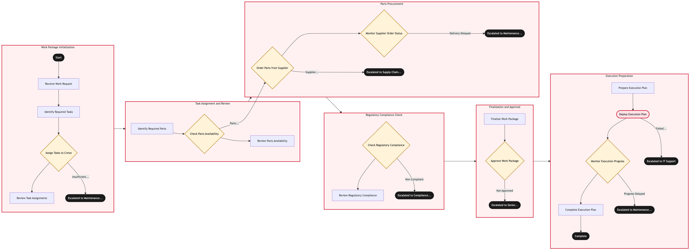

Updated 2026-08-21
Base Maintenance Work Package Build
Process flow
Click to zoom

Process steps
▼
Phase 1 — Work Package Initialization
4 steps
| Step | Activity | Role | System | Input | Output | KPI | Dec | Exc | Pain point |
|---|---|---|---|---|---|---|---|---|---|
| 1.1 | Receive Work Request | Maintenance Control Analyst | TRAXB | Maintenance request from flight operations or fleet management. | Work package creation in TRAX. | Time to create work package: 2 hours. | N | N | Delays in receiving work requests from field teams can cause delays in maintenance planning. |
| 1.2 | Identify Required Tasks | Maintenance Engineer | TRAXB | Work package creation in TRAX. | Task cards and work instructions in TRAX. | Tasks identified per hour: 5 tasks. | N | N | Complex aircraft configurations can lead to errors in task identification. |
| 1.3 | Assign Tasks to Crews | Maintenance Control Analyst | TRAXB | Task cards and work instructions in TRAX. | Crew assignments in TRAX. | Tasks assigned per hour: 10 tasks. | Y | N | Resource constraints can lead to delays in task assignment. |
| 1.4 | Review Task Assignments | Maintenance Engineer Lead | TRAXB | Crew assignments in TRAX. | Approved task assignments. | Tasks reviewed per hour: 8 tasks. | N | N | Incorrect task assignments can lead to inefficiencies on the shop floor. |
▼
Phase 2 — Task Assignment and Review
3 steps
| Step | Activity | Role | System | Input | Output | KPI | Dec | Exc | Pain point |
|---|---|---|---|---|---|---|---|---|---|
| 2.1 | Identify Required Parts | Maintenance Engineer | TRAXB | Approved task assignments. | Parts list in TRAX. | Parts identified per hour: 4 parts. | N | N | Obsolescence of parts can lead to delays in procurement. |
| 2.2 | Check Parts Availability | Inventory Control Analyst | TRAXB | Parts list in TRAX. | Availability status of parts in TRAX. | Parts checked per hour: 6 parts. | Y | N | Stockouts can lead to delays in maintenance schedules. |
| 2.3 | Review Parts Availability | Maintenance Engineer Lead | TRAXB | Availability status of parts in TRAX. | Approved parts list. | Parts reviewed per hour: 5 parts. | N | N | Incorrect part availability can lead to rework and delays. |
▼
Phase 3 — Parts Procurement
2 steps
| Step | Activity | Role | System | Input | Output | KPI | Dec | Exc | Pain point |
|---|---|---|---|---|---|---|---|---|---|
| 3.1 | Order Parts from Supplier | Inventory Control Analyst | AeroxchangeC | Parts list in TRAX. | Supplier order confirmation. | Order placed per hour: 2 orders. | Y | N | Supplier lead times can vary, affecting maintenance schedules. |
| 3.2 | Monitor Supplier Order Status | Inventory Control Analyst | AeroxchangeC | Supplier order confirmation. | Order status updates. | Status checks per hour: 4 checks. | Y | N | Delayed deliveries can impact aircraft turnaround times. |
▼
Phase 4 — Regulatory Compliance Check
2 steps
| Step | Activity | Role | System | Input | Output | KPI | Dec | Exc | Pain point |
|---|---|---|---|---|---|---|---|---|---|
| 4.1 | Check Regulatory Compliance | Regulatory Compliance Analyst | Transport Canada CAWISC | Work package in TRAX. | Compliance status. | Compliance checks per hour: 3 checks. | Y | N | Non-compliance can lead to fines and operational disruptions. |
| 4.2 | Review Regulatory Compliance | Maintenance Engineer Lead | TRAXB | Compliance status. | Approved work package. | Reviews per hour: 5 reviews. | N | N | Misinterpretation of regulations can lead to errors in compliance checks. |
▼
Phase 5 — Finalization and Approval
2 steps
| Step | Activity | Role | System | Input | Output | KPI | Dec | Exc | Pain point |
|---|---|---|---|---|---|---|---|---|---|
| 5.1 | Finalize Work Package | Maintenance Control Analyst | TRAXB | Approved work package. | Completed and finalized work package. | Finalization time: 1 hour. | N | N | Complex work packages can require additional review time. |
| 5.2 | Approve Work Package | Maintenance Manager | TRAXB | Completed and finalized work package. | Approved work package. | Approval time: 30 minutes. | Y | N | Delays in approval can impact maintenance schedules. |
▼
Phase 6 — Execution Preparation
4 steps
| Step | Activity | Role | System | Input | Output | KPI | Dec | Exc | Pain point |
|---|---|---|---|---|---|---|---|---|---|
| 6.1 | Prepare Execution Plan | Maintenance Control Analyst | TRAX eMobilityB | Approved work package. | Execution plan in TRAX eMobility. | Plan preparation time: 1 hour. | N | N | Inaccurate execution plans can lead to inefficiencies on the shop floor. |
| 6.2 | Deploy Execution Plan | Maintenance Control Analyst | TRAX eMobilityB | Execution plan in TRAX eMobility. | Deployment confirmation. | Deployment time: 30 minutes. | N | Y | System failures can disrupt execution plans. |
| 6.3 | Monitor Execution Progress | Maintenance Control Analyst | TRAX eMobilityB | Deployment confirmation. | Execution progress updates. | Progress checks per hour: 4 checks. | Y | N | Delays in execution can impact aircraft turnaround times. |
| 6.4 | Complete Execution Plan | Maintenance Control Analyst | TRAX eMobilityB | Execution progress updates. | Completed execution plan. | Completion time: 2 hours. | N | N | Inaccurate monitoring can lead to missed deadlines. |
Swim lanes
Maintenance Control Analyst1.1 1.3 5.1 6.1 6.2 6.3 6.4
Maintenance Engineer1.2 2.1
Maintenance Engineer Lead1.4 2.3 4.2
Inventory Control Analyst2.2 3.1 3.2
Regulatory Compliance Analyst4.1
Maintenance Manager5.2
Systems touched
TRAXBAeroxchangeCTransport Canada CAWISCTRAX eMobilityB
Key performance indicators
- Time to create work package: 2 hours
- Tasks identified per hour: 5 tasks
- Tasks assigned per hour: 10 tasks
- Parts identified per hour: 4 parts
- Approval time: 30 minutes
Risks and control points
- Resource constraints leading to delays in task assignment.
- Obsolescence of parts affecting procurement timelines.
- Supplier lead times impacting maintenance schedules.
- Non-compliance with regulations resulting in fines and operational disruptions.
- System failures disrupting execution plans.
Air Canada Process Wiki — process and systems reference compiled from public sources
for IT Application Management and User Support pre-sales discovery.
Built 2026-08-21. Every system carries an evidence tier: tier C is an industry pattern and tier U is an open
question, and neither should be asserted as fact about Air Canada without confirmation in discovery.
Not affiliated with or endorsed by Air Canada. Air Canada, Aeroplan and Altitude are trademarks of Air Canada.